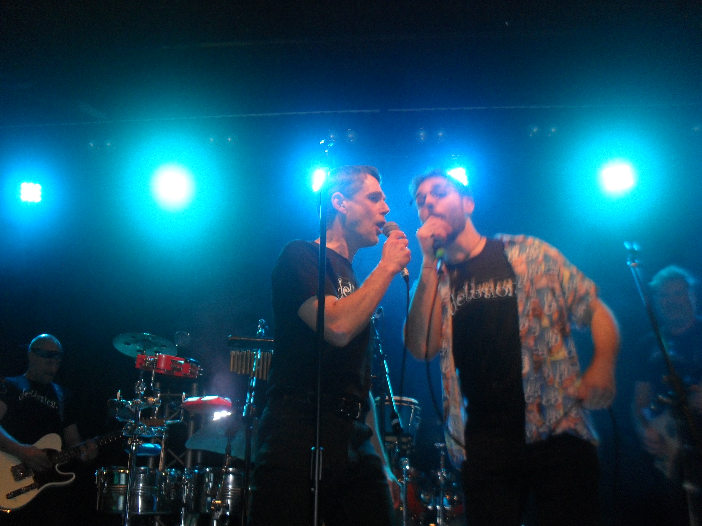
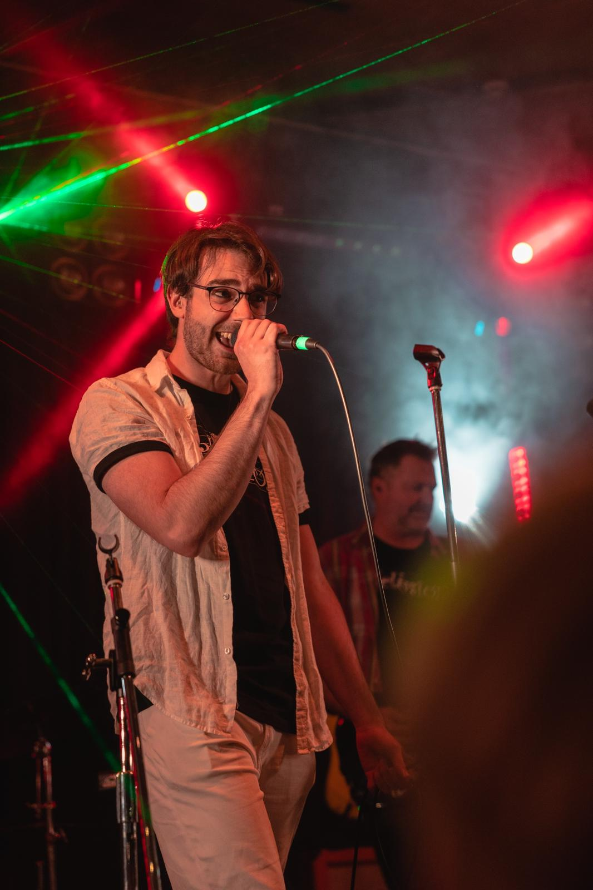

Musical Performances
All performances are vocal performances unless otherwise specified. This list is not exhaustive and excludes any performances done as part of my schooling.| Venue | Act | Year |
|---|---|---|
| Hunter Baillie Memorial Church, Annandale | SUMS Choir | 2026 |
| Verbruggen Hall, Sydney Conservatorium of Music | SCM Chinese Music Ensemble Bowed String Ensemble (on Erhu) | 2026 |
| The Bridge Hotel, Rozelle | The Delusions | 2026 |
| Coledale RSL, Coledale | The Delusions | 2025-2026 |
| Pitt Street Uniting Church, Sydney | SUMS Choir | 2025 |
| Unibar, University of Wollongong | The Delusions | 2025 |
| University of Sydney Great Hall, Camperdown | SUMS Choir | 2024 |
| Hunter Baillie Memorial Church, Annandale | SUMS Choir (performing my composition!) | 2024 |
| Waves, Towradgi | The Delusions | 2024 |
| St. Stephen's Uniting Church, Sydney | SUMS Choir | 2024 |
| University of Sydney Great Hall, Camperdown | SUMS Choir | 2023 |
| Joseph Post Auditorium, Sydney Conservatorium of Music | SUMS Choir | 2023 |
| Unibar, University of Wollongong | The Delusions | 2023 |
| Verbruggen Hall, Sydney Conservatorium of Music | SUMS Choir | 2023 |
| Heritage Hotel, Bulli | The Delusions | 2022 |
| Smith's Hill High School, North Wollongong | Festivus, with Quincessential (on bass and acoustic guitar) | 2018 |
| Heritage Hotel, Bulli | The Delusions | 2018 |
| Smith's Hill High School, North Wollongong | Opening for Kingston County | 2018 |
| Heritage Hotel, Bulli | The Delusions | 2014 |
| Sydney Opera House | Festival of Instrument Music (on bass recorder) | 2012 |
| Sydney Opera House | Festival of Instrument Music (on tenor recorder) | 2011 |
| Sydney Opera House | Festival of Instrument Music (on treble recorder) | 2010 |
| Sydney Opera House | Festival of Instrument Music (on descant recorder) | 2009 |
| Sydney Opera House | Festival of Instrument Music (on descant recorder) | 2008 |
The Delusions
My Dad drums for @delusionsband, and I joined them (perhaps through nepotism) as vocalist! We are a big family cover band, and we often play at local venues in the Wollongong area as listed above.

